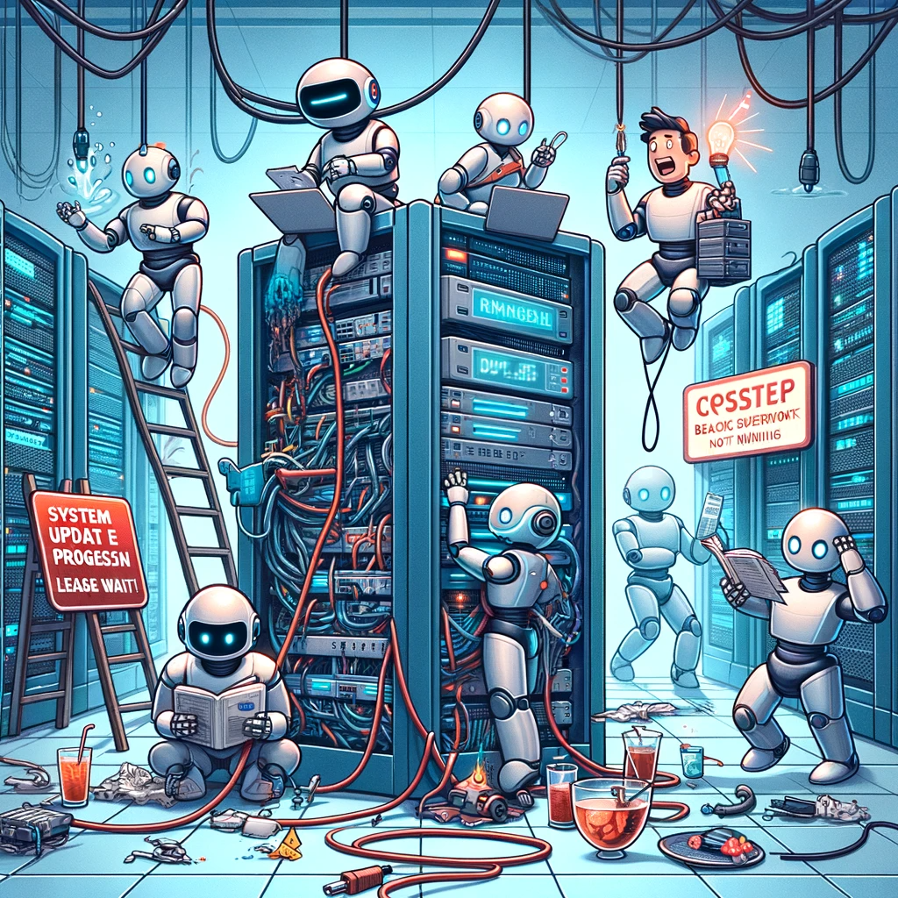

<div class="text-center" *ngIf="fetching">
  <div class="spinner-grow spinner-border m-5" style="width: 9rem; height: 9rem; position: relative; top: 300px"
    role="status">
    <span class="visually-hidden">Loading...</span>
  </div>
</div>
<div class="custom-container" *ngIf="!fetching && games.length < 1">
  <div class="custom-row">
    <div class="custom-col">
      <h4>No Backend Running</h4>
      
    </div>
    <div class="custom-col">
      <h1 class="or-text">OR</h1>
    </div>
    <div class="custom-col">
      <h4>No Game Created</h4>
      
      <button class="btn-create-game" (click)="redirectToControlpanel()">
        Create a Game
      </button>
    </div>
  </div>
</div>
<div class="container-fluid pt-3" style="padding: 0; margin: 0;" id="map-container" *ngIf="grid.length > 0">
  <div class="row">
    <div class="container">
      <div class="row justify-content-center text-center">
        <div style="width:auto;" class="col-md-2 justify-content-start text-start"
          *ngIf="players.length > 0 && games.length >= 1">
          <app-sidebar [players]="players" [fetching]="fetching"></app-sidebar>
        </div>
        <div 
        style="width:auto; margin-right: 25px; margin-top: 0; padding-top: 0;" 
        class="col-md-2 justify-content-start text-start question" 
        *ngIf="players.length <= 0 && games.length >= 1">
          <span class="first-line">No Players!</span>
          <br>
          Is the GameLog running?
          <br>
          No playing players?
        </div>

        <div class="col-md-8" style="width: 1200px; padding: 0;">
          <app-game *ngIf="!fetching" [game]="games[0]" [planets]="planets" [robots]="robots"></app-game>

          <div class="map-container" *ngIf="games.length > 0">
            <div class="map-row" *ngFor="let row of grid; trackBy: trackByRowIndex">
              <div class="map-cell" *ngFor="let planet of row; trackBy: trackByPlanetId">
                <app-planet *ngIf="planet; else noPlanet" [planet]="planet" [showInfo]="showPlanetInfo"
                  [class.highlighted]="planet.highlighted"></app-planet>
                <ng-template #noPlanet>
                  <div class="noPlanet"></div>
                </ng-template>
              </div>
            </div>
          </div>
        </div>
        <div class="col-md-2 justify-content-end text-end" style="float: right" *ngIf="games.length > 0 && !fetching">
          <app-settingsbar></app-settingsbar>
        </div>
      </div>
    </div>
  </div>
</div>